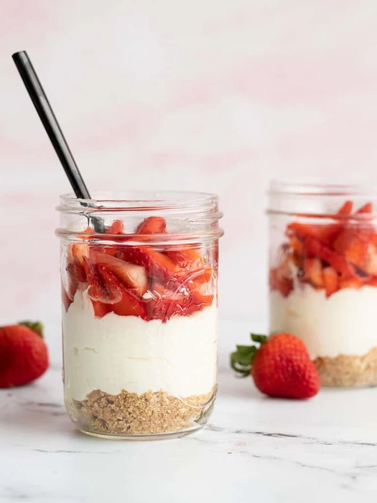
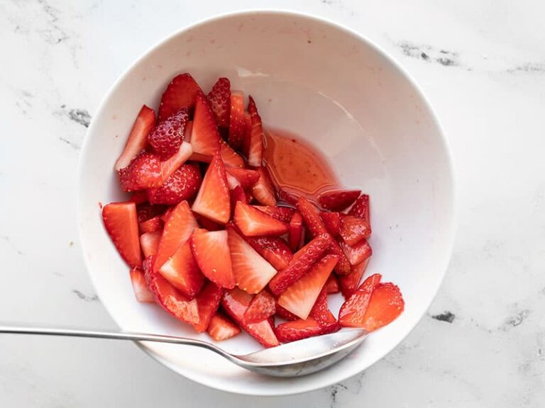
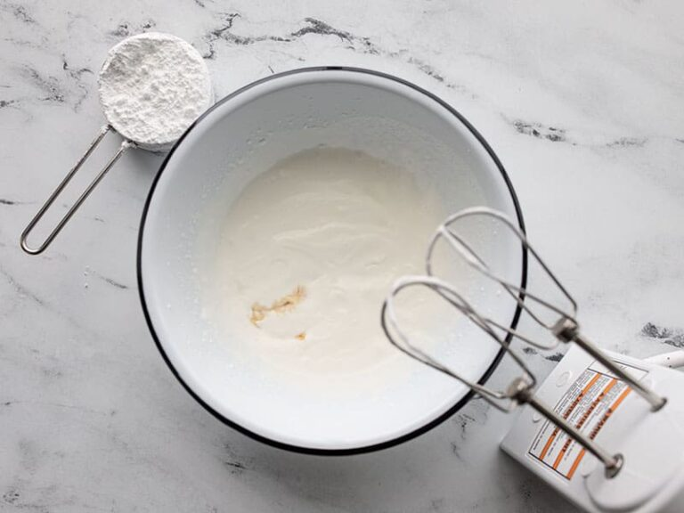
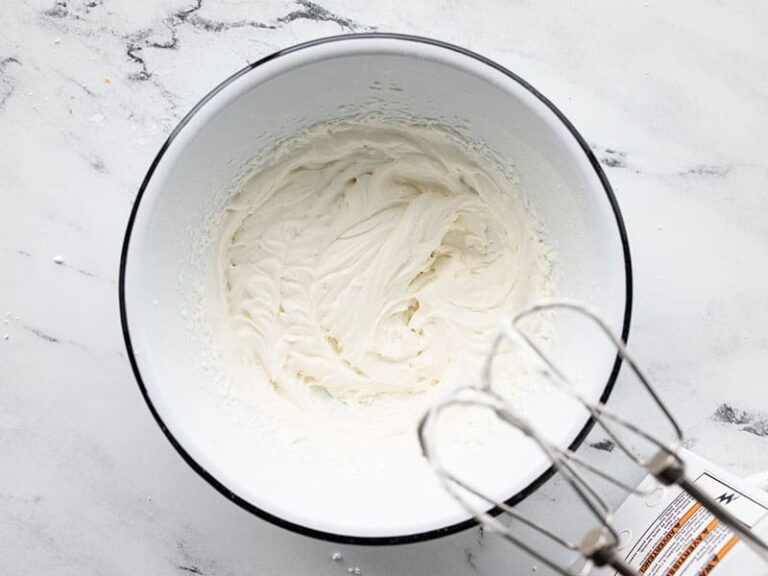
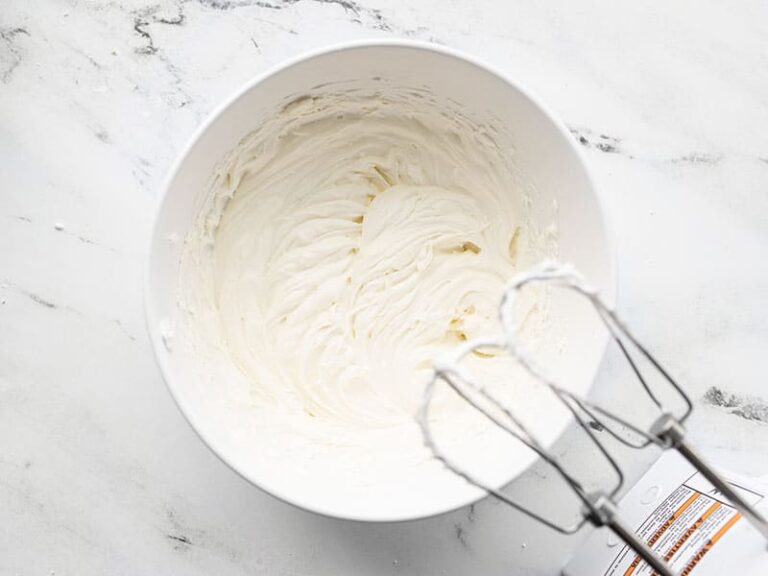
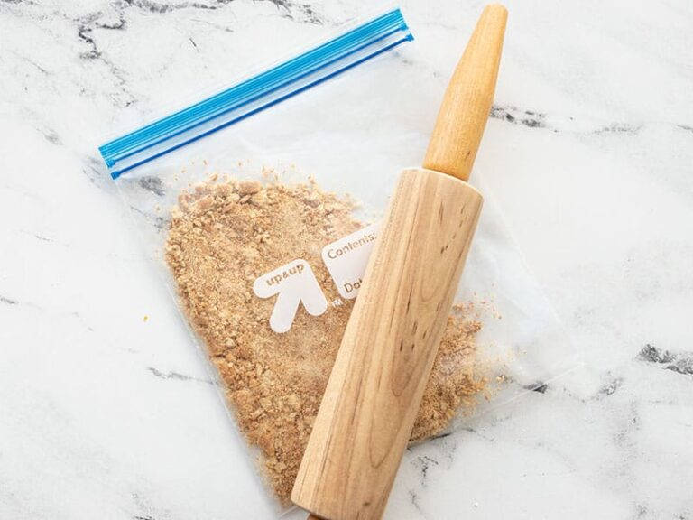
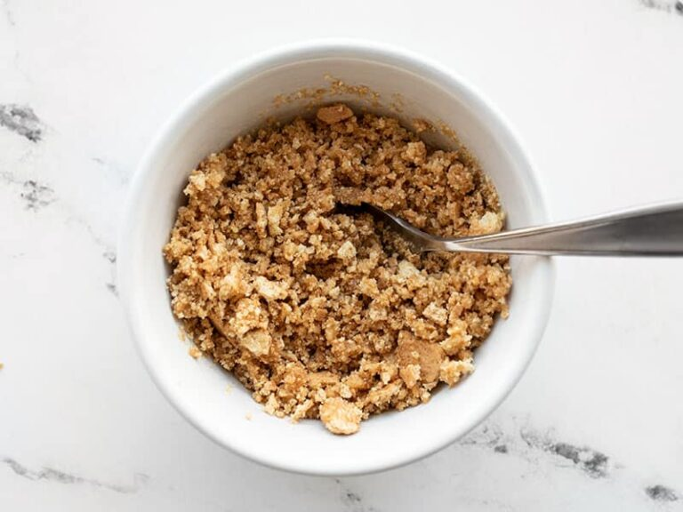
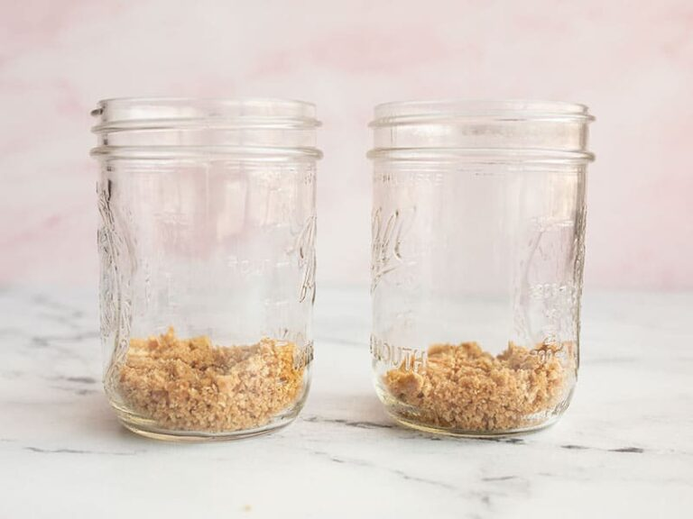
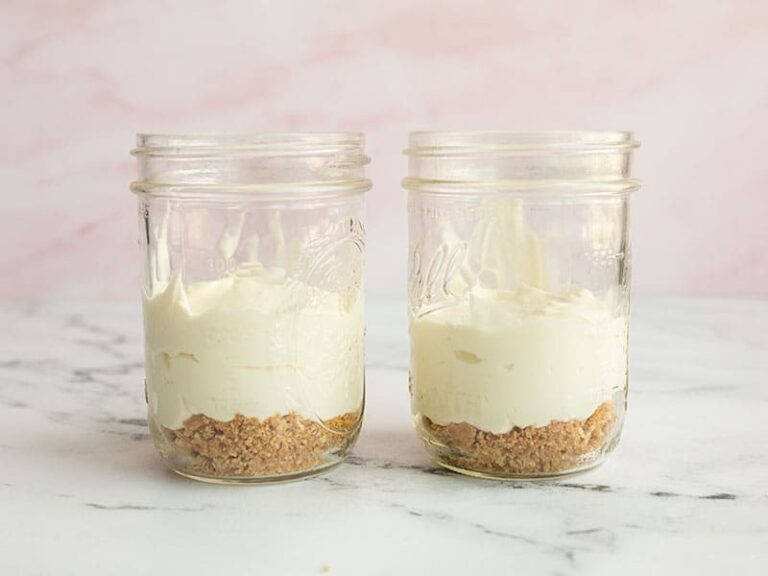
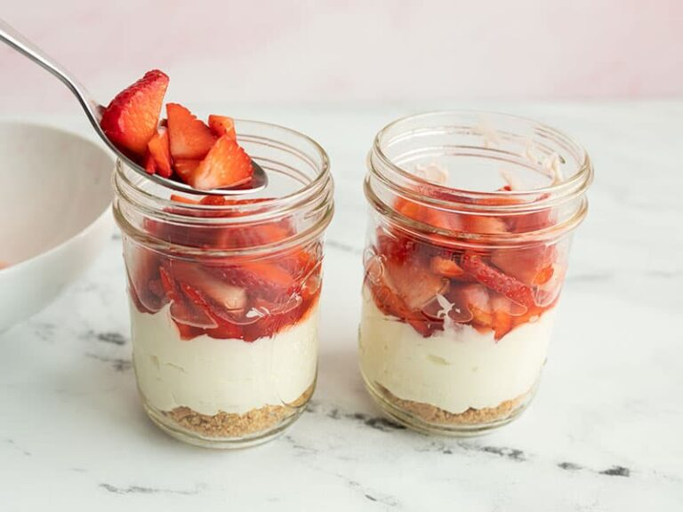

No Bake Cheesecake for Two
Description
Valentine’s Day is coming and and whether you’re going to be celebrating with your honey,
your bestie, or your selfie, this super easy No Bake Strawberry Cheesecake is sure to make
the day a little sweeter. ;) Traditional cheesecake can be kind of a pain to bake and I
definitely don’t want to feel pressured to eat the whole thing, so I find this smaller
batch no-bake version to be a reasonable compromise between flavor, effort, and my craving fix.
Ingredients
- 1/2 lb. fresh strawberries ($2.00)
- 2 Tbsp granulated sugar ($0.04)
- 4 oz. cream cheese, room temperature ($0.40)
- 1 Tbsp lemon juice ($0.03)
- 1 cup heavy whipping cream ($0.78)
- 1/2 cup powdered sugar ($0.03)
- 1/2 tsp vanilla extract ($0.15)
- 2 graham crackers ($0.10)
- 1 Tbsp butter ($0.13)
- 1/2 Tbsp brown sugar ($0.02)
Directions
- the strawberries well, remove the stems, then slice them. Place the sliced strawberries in a bowl, add the granulated sugar, and stir to combine. Let the strawberries sit while you prepare the rest of the dish, stirring them occasionally to help draw out the juices.
- In a separate bowl, begin whipping the heavy whipping cream on high speed with a hand mixer or stand mixer. When it becomes thick and fluffy, but is not yet forming peaks, add the vanilla extract and powdered sugar. Start on low speed until the powdered sugar is incorporated, then switch to high speed and continue to whip until the whipped cream forms stiff peaks.
- In a separate bowl, combine the cream cheese and lemon juice. Use a hand mixer or stand mixer to whip the cream cheese and lemon juice together until soft and creamy.
- Add the whipped cream to the bowl of whipped cream cheese, then whip the two together until evenly combined.
- To make the graham cracker crust, place the graham crackers in a zip top bag and use a heavy object to crush the crackers until they are in fine crumbs. Melt the butter in a small bowl, then add the graham cracker crumbs and brown sugar, and stir until combined.
- To assemble the no bake cheesecakes, divide the graham cracker crumbs between two jars, glasses, or other small containers. Next add the cheesecake filling, then top with the juiced strawberries (making sure to add a couple spoonfuls of the strawberry juice with the berries). Enjoy immediately or refrigerate until ready to eat!








